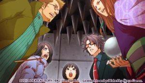
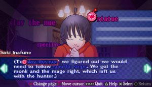
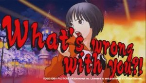
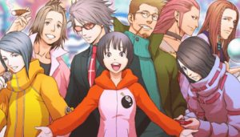

Review: Sweet Fuse: At Your Side
You can also read this review in pdf form.
In a Nutshell
Sweet Fuse: At Your Side is a quirky little visual novel for the PlayStation Portable. It was released in Japan as Bakudan Handan (Bomb Decision) on June 14th, 2012, and came to US and PAL regions in August of the next year. With a focus on mystery and romance, players assume the role of a high school student named Saki Inafune as she works alongside six other people trapped in her uncle's theme park. It was developed by Otomate, a subsidiary of Idea Factory, and published by Aksys Games in the west.
I should start by saying that I'm not really in this game's target audience. Sure, I do love the mystery genre in general, and the game takes heavy influence from the likes of Zero Escape and Ace Attorney, two of my favorite game series' of all time. But this was my first foray into the otome genre — story based games targeted towards women, usually consisting of romance between the POV and the player's choice of one of several male characters. Although I wasn't interested in this aspect of Sweet Fuse, I'm glad to say that the game has much more to offer, and even does away with many tired conventions of the genre.
Story: Well-paced and entertaining, but not especially deep
Synopsis
Saki Inafune is the (fictional) niece of the real-life game developer Keiji Inafune, who was invited to the opening day ceremony of his new theme park. Just as the ceremony gets underway, a group of people dressed as "piglets" storm the stage, taking park staff and Mr. Inafune himself hostage. Their leader, a mysterious individual named Count Hogstein (appropriately dressed like a fat pig with a cigar), blows up the Ferris wheel and announces the beginning of seven deadly games, requiring seven "heroes" to complete them. Determined to save her uncle, Saki volunteers herself as a participant.
Characters
The main cast of Sweet Fuse consists of the seven "heroes" selected by Hogstein; player character Saki Inafune, and six men who were all at the theme park for different purposes. These characters each have their own unique charms and quirks, with occupations ranging from a police detective, a boy band idol, a freelance journalist and even a fortune teller. I'll touch more on their designs later, but I found each of their appearances to be pretty effective at giving you the gist of what each character was about. Over the course of the game you'll be spending a lot of time with these characters, so luckily for me personally, none of them stood out as bad or obnoxious, and even the ones I wasn't crazy about in the beginning grew on me the more I saw of them. Besides Hogstein's voiceless Piglet henchmen, there are a few additional characters that pop up throughout the story, and although they didn't get quite as much screentime, none of them felt like wasted additions and ended up being integral to the plot in one way or another.
In my research, Saki Inafune has been particularly praised among fans of the otome genre. As far as otome protagonists go, it is typical that they don't affect the plot much with their own agency, instead taking a backseat to allow the male leads to shine. So, Saki's forceful and overtly optimistic personality taking center stage seemed to be a breath of fresh air in the genre. Saki will frequently call the male characters out (both the love interests and Hogstein) on their behavior in explosive fashion. Saki's remarkable powers of insight also frequently amaze the people around her, saving the day on numerous occasions. In my opinion Saki serves as an awesome and unexpected protagonist, who manages to have a striking personality and a clear goal without losing relatability.
Narrative Design
After the brief opening sequence of Hogstein taking over the park, the game roughly repeats the same pattern until its conclusion. First, the cast is forced to navigate one of Hogstein's seven deadly games. If they fail, the attraction detonates, killing everybody inside and resulting in a game over. If they succeed, Hogstein allows them to go for the night, giving them a single, cryptic clue to his identity. Then, the cast recuperates, interacting a bit more and attempting to uncover the mysteries of the game when possible. Then they return to the hotel they're staying, and sleep until the next day. However, the formulaicity isn't egregious, considering in-universe it matches the rules to Hogstein's game.

A key focus of the story is the mystery surrounding Hogstein's motives for organizing the game. Figuring out the truth about Hogstein's identity will take at least two playthroughs, but I suspect most players won't want to play the "true ending" until they've done a fair bit (or all) of the other character's routes. Each character's route will allow you to learn more about their personalities and backstories, and will often lead to some character development along the way. Each of Hogstein's seven games have their own mysteries, acting as puzzles the player must solve to escape. All but one of the main routes deviate from the "main path" (playing through all of Hogstein's seven games), incentivizing you to play multiple times to experience all of the puzzles.
Each route only has two endings; a good and a bad ending. One of my main gripes with the game is that these endings only had minor differences between them that usually only came into affect at the very end. The bad endings generally felt unsatisfying, meaning the game was basically telling you to try again if you wanted to see the "real" ending. This may just be a personal thing, but I prefer when branching endings are all equally valid, and feel completely fitting for the story even if the outcome isn't the desired one. That and the fact that it's nearly impossible to get these bad endings while playing the game normally made this system feel like an afterthought, only added as an obligation to the conventions of the genre.
Tone
Unlike Zero Escape, Sweet Fuse is markedly more lighthearted and eccentric. There are frequent jokes and funny moments that I found myself laughing to quite frequently. While it does touch upon dark subjects, especially towards the end, overall it remains relatively upbeat to appeal to its target demographic. I don't have a problem with this, although some of the danger the characters were in felt a bit undermined as a result. For example, when the cast is caught in a gigantic explosion, all but one escapes with minor injuries. One character is missing, but for some reason instead of assuming he's dead, the cast think he's avoiding them after being outed as a traitor. This feels like an odd decision, as the group believing him to have died to save them could have made for a far more emotional moment. Other than that moment, I think the emotional payoffs were done well, and the romance probably set the hearts aflutter for those who were looking for it.
Gameplay: Serviceable, but not challenging
User Experience
The user interface is vibrant and nice to look at. Settings are fairly straight forward, although I found the default key bindings to be a little odd. However, I feel like there's not really any standard conventions for visual novels for controllers. Overall menus and gameplay UI were very readable but still allowed the game's personality to permeate. The translation is quite good here, and there were only a few typos or times things felt "off" in the text.
Mechanics
The core mechanic of Sweet Fuse is the affection meter. Every time you make a decision that a specific character appreciates, you gain affection with them. Determining how to build affection with a character of your choice will allow you to get on their route that playthrough. Past a certain threshold of affection, you will become locked on that route, meaning you must attain a certain level of affection with that character to get the good ending. At the end of each day, you can choose who to spend some time with, being treated to a nice heart-to-heart moment with your chosen character, and an affection point. If you're locked onto a route, the decision will be made for you.
Another affection-building mechanic in the game is the "What's Wrong With You!?" mechanic. If Saki gets (usually rightfully) angry at a character's decision, the player can choose to "get mad" or "restrain myself". If you choose to get mad, you're treated with a glorious sequence of Saki shouting at the affected character. At the end, they will usually concede that you're right, and you'll earn some affection. This mechanic is not only hilarious, but actually ties into the story, as deciding to get mad or not can determine the path of the story, for better or worse. This is a fan favorite feature of the game, as the idea of a dating sim where you can yell at the love interests for being misogynistic is a pretty good selling point.
Although you can shout at Hogstein, it should be noted that you can't build affection with him... or can you?
By far the stand-out mechanic of the game is Explosive Insight. When faced with a particular problem during a game, Saki thinks intently about everything the group has tried. Then, in keeping with the game's bomb motif, has the option to place bombs on three words of Saki's monologue. If any of the three words is the key word that points to the solution of the puzzle, you'll be treated to a triumphant sequence as Saki explains her reasoning. However, it's usually not that simple, and it will take multiple Explosive Insights to figure out the real solution. I really like the idea of the mechanic, but I found it to be a little too easy. At many points, the key word was obvious, and three bombs was way too lenient even if I didn't know the solution right away. It's understandable considering the game is mostly marketed towards non-gamers.
Presentation: Great, but sometimes limited
Graphics
I generally favor eccentric and attention grabbing character designs over more subtle and realistic ones. Sweet Fuse's artstyle is unique and distinctive, characters being drawn by Ace Attorney's veteran artist Iwamoto Tatsurou. Backgrounds were outsourced to Quun Plant, a Japanese graphics production company. Most backgrounds fit the scenes, but there were a few times where dialogue and on screen visuals didn't quite match up. Event CGs were well done, although I felt the game could have used a bit more in certain spots. Sprites are expressive and full of personality, and although they're not elaborately animated, full blinking and lip syncing with dialogue helps bring the characters to life on screen. The game's visuals shine during the Explosive Insight and "What's Wrong With You!?" sections, with animations and effects combining to, to put it simply, look really cool.
Sound
The game is fully voice acted, featuring a cast of 10 notable voice actors, and a popular Japanese comedian to play the equally comical and terrifying Hogstein. Although I don't speak Japanese, I found the recorded dialogue to be expressive, and heightened the dialogue just a bit. I can see some people not liking reading text in English while simultaneously hearing the dialogue in Japanese, so luckily there's a way to disable dialogue audio completely.
Sweet Fuse's soundtrack is a joint effort between many composers, featuring licensed music for the opening and ending sequences, as well as a host of original music during gameplay. The track list is incredibly diverse, featuring dark and mysterious synth tracks, electronic rock bangers, and somber piano ballads. Despite the many different composers, the soundtrack is tied together with its use of chugging electric guitars, distorted drums, trance-y synths, and even violins. Overall it's a charming but punkish sounding suite that fits the game well. A few stand out tracks include What's Wrong With You, an exciting track to accompany Saki's signature catchphrase, and Track Down, with a triumphant string melody to congratulate the player as they solve puzzles. My personal favorite track is Connect Addict, the background music for the attraction based on a fictional racing game, "Alice Kart". I've embedded the track below.
I didn't notice the sound effects, which means they're amazing.
Impact
As of 2013, the game sold 5,604 units. There's no updated sales metrics available to view, but it's probably pretty likely that the game didn't do amazing. Outside of the niche visual novel and otome communities online, there's very little discussion about the game. The game had a relatively short lived manga serialization from 2012 to 2013 by Asuka Comics DX, although there's also little information about it online.
Reception
For those who have played the game, it has been received quite well. Comparing critic and user reviews in the east and west, it seems to average about 82%. The game seems to have only been appreciated more as time goes on. To quote USgamer's 2013 article, "By turns humorous, dramatic, touching and tragic, Sweet Fuse is a great example of how visual novels are an excellent fit for Sony's portables -- and how even the most ridiculous of premises can make for a surprisingly compelling interactive story".
Wrap Up
Sweet Fuse: At Your Side, despite me not explicitly being in its target audience, was a blast (pun intended). On a scale from hidden rock to hidden gem, this definitely leans heavily towards the "gem" side. While it's definitely not for anyone, and the game's marketing might have limited its reach a bit, it would definitely be enjoyable to any visual novel fan who enjoyed Zero Escape or Ace Attorney. I only wish the male majority of gamers (which includes me) could overlook the female-catered marketing and presentation and recognize this excellent visual novel.
Should You Check it Out?
| Yes! If you... | No! If you... | Maybe! If you... |
|---|---|---|
| Want a unique take on the otome genre | Want challenging and hands-on gameplay | Want an accesible gateway into visual novels |
| Enjoy a quirky and outlandish atmosphere with banging music | Prefer a grim and serious tone | Are intrigued by unique premises |
| Are fine with the mystery taking a backseat in favor of character development | Want a deeper and more central mystery focus | Like mystery stories in general |
| Can muster dialogue heavy scenes | Lose interest in story-focused games quickly | Enjoy exploring character dynamics |
| Are drawn to visually distinctive character designs | Prefer more realistic character designs | Have no preference for character designs |